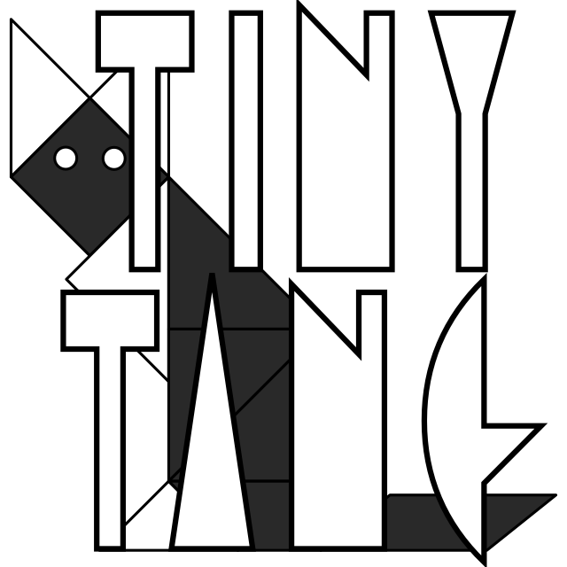

Bluetooth gamepads
Switch-mode Bluetooth pads such as the 8BitDo pair from TinyDesk’s Bluetooth window, which now has five slots: keyboard, mouse, combo, Pad 1 and Pad 2. In TinyNES, Pad 1 and Pad 2 play as players 1 and 2.
Open FPGA console ecosystem
TinyTang turns the Tang Console 138K into a cartridge-driven playground for classic systems, custom hardware, and bare-metal RISC-V software.

The stack
Each repository owns one part of the machine. TinyTang ties them together without hiding where the hardware ends and the software begins.
Playable now
The current TinyTang shell recognizes four integrated cartridge families, with newer experiments growing alongside them.
NES on FCEUmm, with save states, HDMI output, and wired Wii Classic or Bluetooth controllers.
Game Boy Color on gambatte, with palettes, colour correction, battery saves, and cartridge clocks.
A TI-89 Titanium emulator on TiEmu, with the calculator’s screen on HDMI. Bring your own TI-89 Titanium OS image.
A music player and stereo XY visualiser: Rockbox’s codecs on the AE350, the picture and I2S audio in the FPGA.
On main since v0.2.1 · not yet released
Built and passed on the board since the last release. It is on TinyTang’s main branch and ships in the next release; until then, building from source is the way to get it.
Switch-mode Bluetooth pads such as the 8BitDo pair from TinyDesk’s Bluetooth window, which now has five slots: keyboard, mouse, combo, Pad 1 and Pad 2. In TinyNES, Pad 1 and Pad 2 play as players 1 and 2.
The Bluetooth pad, the wired Wii Classic and the nunchuck drive TinyDesk alike: left stick for the pointer, right stick for the wheel, d-pad for the arrows. Over a running TinyNES game the wired Classic does too.
Books and pictures at the full 1280×720, from a framebuffer in the dock’s SDRAM. Books open as two-page spreads and turn in one frame, with a zoom mode for each half page.
The TinyNES and TinyGBC windows share one compact layout across their Library, Input, Video, Audio and Saves tabs, and the Saves tab leads with when each save was written.
A shared console contract
The BL616 side handles the stable console experience—files, menus, controllers, and loading. FPGA cartridges provide the machine-specific world behind it.
Trace the boot pathBuild something small
Start with the console shell, study an integrated system, or follow the open toolchain all the way down to the bitstream.
Choose a path